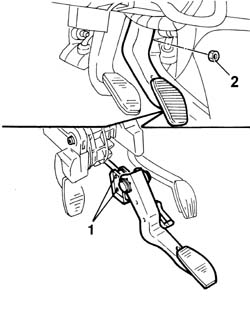
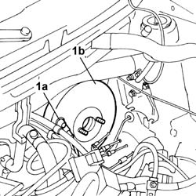

3330D14 brake servo - r+r for versions with abs - includes separation from master cylinder (pump)
- Path
- Procedures > 33 BRAKING SYSTEM > 3330 HYDRAULIC BRAKING SYSTEM > 3330D BRAKE VACUUM SYSTEM > 3330D14 brake servo - r+r for versions with abs - includes separation from master cylinder (pump)
- Kind
- repair procedure (removal / refitting; the operation number is the code)
- Applies to
- all engines; all production periods
- Interactive page
- https://sloeber94.github.io/elrnDB-fPnd/en/#/2752740
Applies to: all engines; all production periods
 Removing
Removing
 Refitting
Refitting3330C34 brake fluid reservoir - r + r and wash inside - versions with r/h drive and abs
5530B56 BATTERY DRIP TRAY COVER - R.R.
5530B52 Battery DRIP TRAY/SUPPORT - R.R.
1048A10 air cleaner filtering element - replace
3330C14 (PUMP) - MASTER CYLINDER .R.R for versions with A.B.S.
3340A12 A'B.S. system. - electronic and hydraulic CONTROL UNIT R.R.
1. Move the brake pedal to disengage the two retainers locking the brake servo pushrod, then release the pushrod from the brake pedal.
2. Undo the nuts securing the brake assembly to the brake servo.

Applies to: all engines; all production periods
1. Working in the engine compartment, disconnect the single-acting valve (1a) and remove the brake servo (1b).

Applies to: all engines; all production periods
Refitting
RemovingFit the brake servo/brake pump assembly in the engine compartment.
Connect the vacuum pipe to the connection on the single-acting valve on the brake servo.
Fit the new retaining device onto the brake pedal to secure the retaining clips.
Move the brake servo back slightly, lift up the brake pedal and position the brake servo push rod by the retaining device.
Press the brake pedal to engage the brake servo push rod with the retaining device.
Tighten the nuts securing the pedal assembly to the brake servo.
 | Fastening | Component | Ø | Value (daNm) |
|---|---|---|---|---|
- | Nut | BRAKE SERVO | M8 | 2.2 |
3340A12 A'B.S. system. - electronic and hydraulic CONTROL UNIT R.R.
3330C14 (PUMP) - MASTER CYLINDER .R.R for versions with A.B.S.
1048A10 air cleaner filtering element - replace
5530B52 Battery DRIP TRAY/SUPPORT - R.R.
5530B56 BATTERY DRIP TRAY COVER - R.R.
3330C34 brake fluid reservoir - r + r and wash inside - versions with r/h drive and abs
0010T64 brake and or clutch fluid check level and top up as necessary
Topics linked from this page (9)
- 0010T64 brake and or clutch fluid check level and top up as necessary
- 0010T65 hydraulic brake system bleed air
- 1048A10 air cleaner filtering element - replace
- 3330C14 (PUMP) - MASTER CYLINDER .R.R for versions with A.B.S.
- 3330C34 brake fluid reservoir - r + r and wash inside - versions with r/h drive and abs
- 3340A12 A'B.S. system. - electronic and hydraulic CONTROL UNIT R.R.
- 5530B10 battery - r+r
- 5530B52 Battery DRIP TRAY/SUPPORT - R.R.
- 5530B56 BATTERY DRIP TRAY COVER - R.R.